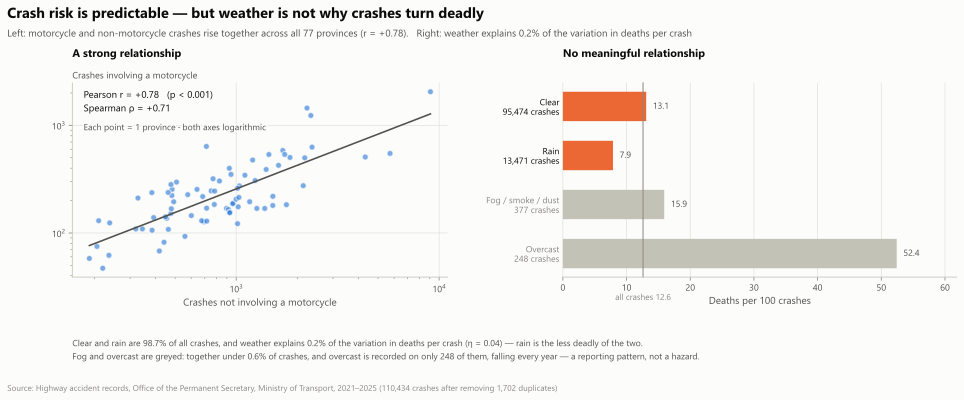
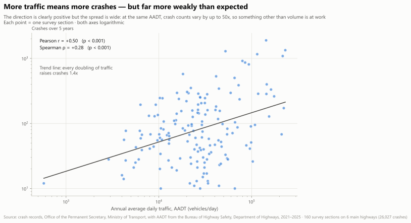
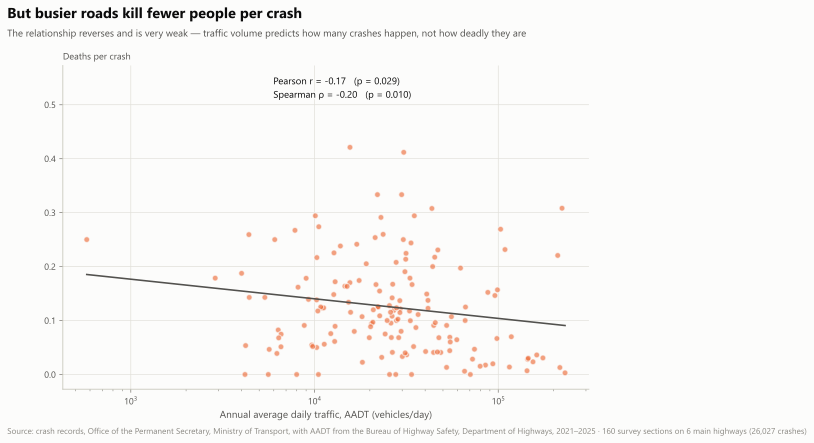
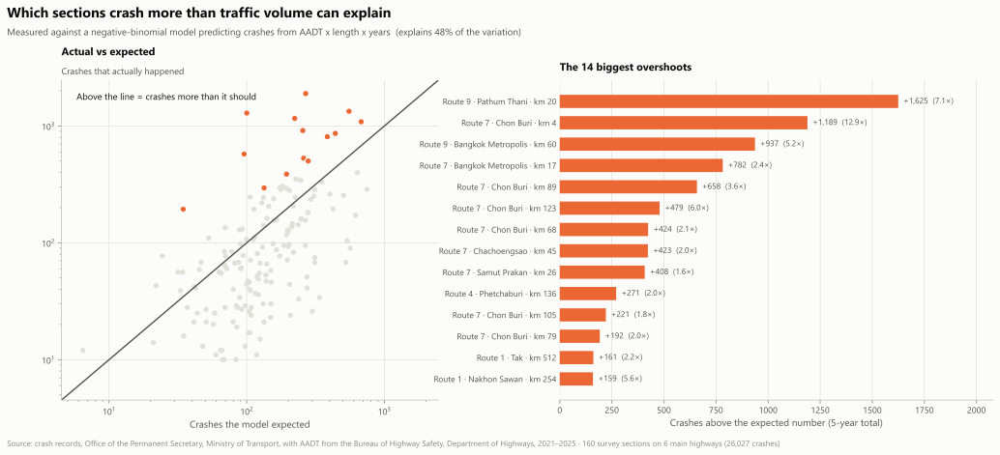
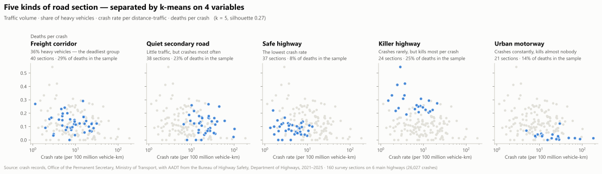
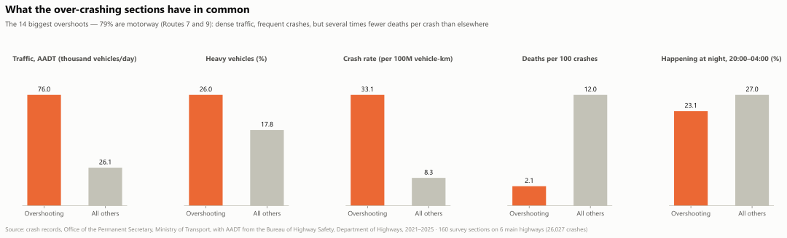

Part 1 · Relationship
The strongest link, and a link that is not there

Left: motorcycle and non-motorcycle crashes rise together across all 77 provinces — r = +0.78, Spearman +0.71, p < 0.001. Right: weather explains 0.2% of the variation in deaths per crash (η = 0.04), and rain is the less deadly of the two large categories — 7.9 deaths per 100 against 13.1 for clear.
Part 1 · The hook
Crash hot spots are not death hot spots
Enforcement resources get allocated by crash count. Scroll to see what happens when the same provinces are ranked by deaths instead.
Only 8 of the 12 provinces appear on both lists. Bangkok has the most crashes — 11,115 — but does not reach the top 12 for deaths. Allocating by crash count sends people to the wrong four.
Part 1 · Exposure
Traffic volume predicts how many crashes, not how deadly


Left: AADT against crash count — Pearson +0.50, Spearman +0.28. Positive, but weaker than expected: at the same traffic volume, crash counts differ by up to 50×. Right: AADT against deaths per crash — −0.17 and −0.20, reversed and very weak. This pair covers the six main Department of Highways routes only: 160 survey sections and 26,027 crashes, 23.6% of the file.
160 survey sections on the six main highway routes. Scroll to watch the steep, positive relationship with crash count flatten into a weak, slightly negative one with fatality rate.
A busier road means more crashes. It does not mean a deadlier one.
Part 1 · Excess risk
Crashing more than traffic volume explains

Five archetypes, one ranking
k-means on traffic volume, heavy-vehicle share, crash rate and deaths per crash splits the 160 sections into five kinds: freight corridors carry 29% of the deaths in this sample and killer highways 25%, while urban motorways carry 14% and kill least per crash. Ranked against a negative-binomial model that explains 48% of the variation in crash counts, the worst section runs 12.9× the crashes it should.

Part 1 · Excess risk
What the worst sections have in common

79% of the 14 biggest overshoots are motorway — Routes 7 and 9. They carry 76,000 vehicles a day against 26,100 elsewhere and crash four times as often (33.1 against 8.3 per 100 million vehicle-kilometres), yet kill 2.1 per 100 crashes against 12.0. The worst sections share a road type; they are not a scatter of unlucky places.